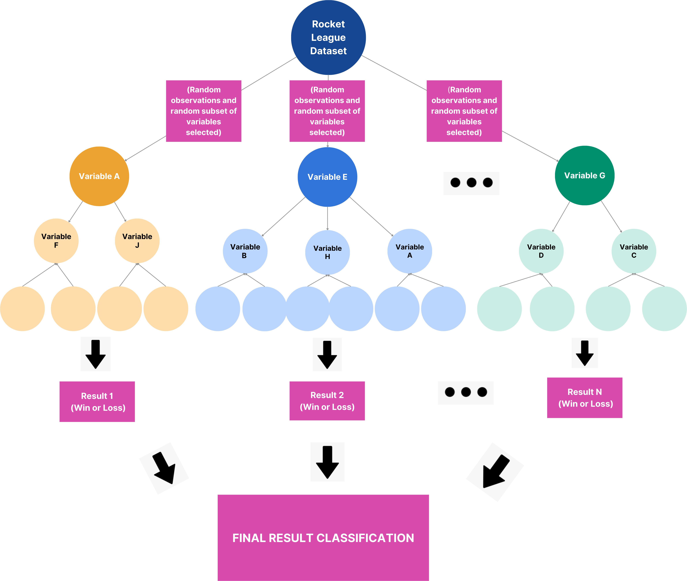
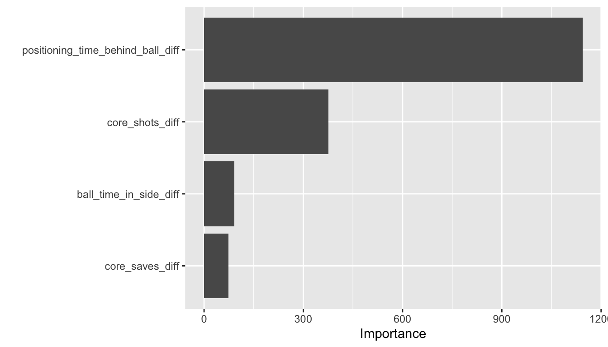

Predicting Rocket League Game Outcome Through Statistical Modeling
By Tanner Bessette, Faculty Advisor: Professor Matt Higham
Department of Mathematics, Computer Science & Statistics
St. Lawrence University
What is Rocket League?
One of the most popular video games/esports in the world
5 minute soccer games played in teams of 3 in rocket-powered cars
Project Goals
Train a model on professional Rocket League games to predict match outcomes (win/loss) for Rocket League games
Assess which variables are most associated with winning games
Explain how certain tactics/strategies used by professional teams are more or less effective
Dataset and Variables
Data spans multiple Rocket League Championship Series tournaments throughout 2021-2022
Team difference variables were created for each game by calculating blue team’s stats minus orange team’s stats
Example of row of data and some variables in the dataset:
winner supersonic_diff sd_shots_diff 1 -3.37 1.1547 Variable descriptions:
winneris a1if blue team won,0if orange team wonsupersonic_diffis the difference (blue minus orange) in total supersonic speedsd_shots_diffis the difference (blue minus orange) in the standard deviation of shots taken across the three players on the team
What is Random Forest?
A subset of the data, called the training data, is sampled with replacement in what is known as a bootstrap sample.
A random subset of variables are used to create a decision tree for the bootstrap sample.
The decision tree classifies each observation in a different subset of the data, known as the test data, as a win or loss.
The process is repeated thousands of times: the result that was predicted by the highest number of decision trees is the model’s final prediction for that observation.

Decision Tree Example

Suppose there is a Rocket League game where
boost_time_zero_boost_diff=-1andpositioning_time_offensive_half_diff=15In the first branch,
-1is less than0.8, so the game is predicted to be a1, which corresponds to the blue team winningTANNER: THERE SHOULD NOW BE SPACE HERE TO REMIND READER THAT -1 CORRESPONDS TO ORANGE TEAM HAVING 1 MORE UNIT OF ZERO BOOST TIME THAN THE BLUE TEAM (no need to put this in the poster but just so you are aware: the cutoff point is not zero because the blue team won more often than the orange team in the data. we think they were the higher seeded team)
Results

TANNER: THERE SHOULD NOW BE ROOM TO EXPAND THE GRAPH IF YOU WANT TO TO SHOW MORE PREDICTORS.
Two clear strongest predictor variables:
difference in positioning time behind the ball
difference in shots
None of the car speed predictors proved to be strong predictors
No standard deviation differences proved to be strong predictors
Final model predicted game outcome with 86.35% accuracy
Conclusion
Results reinforce the idea that keeping constant pressure on your opponent is the most effective Rocket League strategy
Keeping speed high throughout games may be effective in reaching the highest level, but once at the professional level it does not appear to be a significant indicator of game outcome
No significant standard deviation difference predictors means that we cannot definitively determine whether certain team tactics are more associated with winning games
At the highest level of Rocket League, there may not be significant differences in tactical approaches among teams
With further exploration, certain strategic approaches may still prove to be more effective